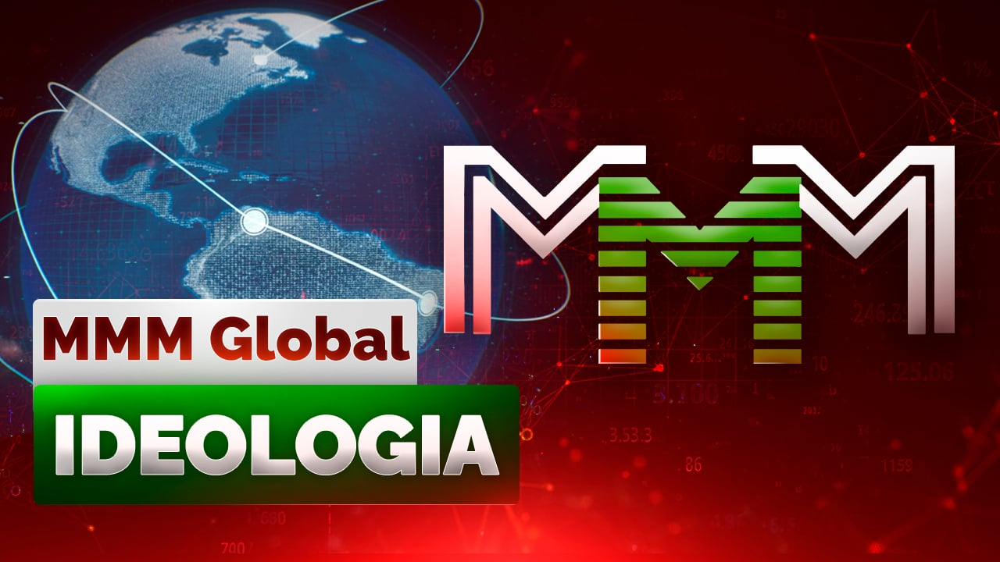

Registro no bot do Telegram: @Mavrodi_robot
Clique no link para ler o Código do Participante do MMM

O mundo moderno é ruim. É desumano, desonesto e injusto. É um mundo de dinheiro. Ele não é para as pessoas. É para aqueles que fazem esse dinheiro, para os banqueiros e financistas. E as pessoas apenas desempenham junto a eles o papel de uma espécie de serviçal. Varrem os palácios para eles.
O que está na base do bem-estar da sociedade? O trabalho. Mas então por que o banqueiro vive cem, mil vezes melhor que o operário? Que o camponês? Por que o especulador da bolsa de valores vive melhor? Sim, todos eles! Será que eles trabalham mais? Absurdo! É até ridículo falar nisso. (Eles nem sequer produzem nada! Nenhum valor material.) Então, por quê?
Não sabem? Mais ainda, provavelmente estão se surpreendendo agora, lendo tudo isso, e de forma completamente sincera: "Ora, como?.. O banqueiro e o operário! Este é um simples trabalhador, como eu ou o meu vizinho Zé, acaso? Hum, olha no que estão comparando. Banqueiro é banco, dinheiro... Contatos! E nós, o Zé e eu, quem somos? Ninguém! E nem nome temos. Naturalmente, o banqueiro vive melhor do que nós".
Mas, entretanto, não há nada de "natural" nisso. É que todos já se acostumaram tanto com este estado de coisas que o percebem como algo devido. Como algo óbvio. Que o mundo é assim, o banqueiro deve viver melhor, e não pode ser de outro modo. Mas pode ser de outro modo!!
Então, por que afinal? Por que o banqueiro trabalha menos e vive melhor? Melhor do que o operário na máquina, do que o mineiro na frente de trabalho? Hein? Aliás, intuitivamente vocês mesmos já palparam a resposta. Porque "o banqueiro é o banco, o dinheiro". Aí está! Exatamente! O DINHEIRO! Neles está toda a essência. A base das bases. E é sobre eles, sobre o dinheiro, que devemos conversar mais detalhadamente.
Então, o que é o dinheiro? Nunca pensaram nisso? Um meio de pagamento? A medida do trabalho? Como nos inculcam desde a infância, literalmente martelam em nós quase desde os cueiros: "É preciso trabalhar, labutar!.. O dinheiro não cai do céu. Tem que ganhá-lo honestamente, com o suor do próprio rosto!.." E etc., e etc., e etc. Conhecido, não é? Simplesmente até dar nojo. (Digam isso, a propósito, a algum Banqueiro. Que "honestamente e com o suor do rosto" ganhou tudo. Todos os seus bilhões. Bom, assim, de brincadeira. Vão morrer de rir! :-))
Sim, "é preciso". Trabalhar. Mas o que resulta no final? Uma aposentadoria de miséria e uma velhice de fome? Pobreza... A vida inteira quebrando as costas para o "tio" alheio, arrancaram todas as suas forças e toda a sua saúde, espremeram você como um limão, e depois simplesmente jogaram no lixo, como lixo comum, como material descartável. Isso é "preciso"? E no entanto, essas são as realidades. Realidades horríveis da sociedade moderna. É exatamente isso que espera a todos nós no final, quase com toda a certeza; é exatamente nisso que, no mundo atual, tudo termina para a esmagadora maioria das pessoas. Como terminou antes para suas mães e pais, avós e bisavós... Como terminará, na atual situação, também com seus filhos, netos... bisnetos... Depois, a seu turno, também com os filhos e netos deles... E com os deles... É assim que o mundo funciona.
Por quê? Isso tudo está errado, é injusto! Não deveria ser assim! Por que uns têm tudo e outros nada? Por que uns nadam na luxúria, vivem para empanturrar-se, enquanto outros mal conseguem fazer as contas no fim do mês? Não sabem com o que alimentar os filhos. Embora tanto uns quanto outros "trabalhem honestamente"? Por quê?! Afinal, todos nós somos pessoas, irmãos? Todos nós somos "iguais"? Então por quê??!!
Sim, porque tudo ao redor é mentira. Uma enorme, contínua, monstruosa e maquiada mentira. Não acreditem em nada que lhes pregam diariamente das telas da TV os donos da vida, bem alimentados e bem cuidados.
E as pessoas de modo algum são iguais, e o dinheiro não é de jeito nenhum a medida do trabalho. Tudo isso é mentira. Deslavada e sem vergonha. Mentira, mentira, mentira e mais uma vez mentira! Papo furado. Enrolação que, sorrindo, te impingem. Por quê? Para que seja mais fácil controlá-los.
Aí está você e o oligarca. (Até um deputado inútil qualquer!) Vocês são iguais? Em quê? Vocês vivem de forma diferente, alimentam-se de forma diferente, descansam de forma diferente. Ele gasta num dia mais do que você num ano! A esposa dele não sai das boutiques de luxo, e a sua?.. Ele se trata nas melhores clínicas suíças, e você onde? Os filhos dele e os seus?.. Comparou? Bom, e em que vocês são "iguais"?
Ah, provavelmente nos direitos? Até esqueci dos tais direitos. Como, tipo, está escrito na Constituição, né? (No cercado, a propósito, também tem muita coisa escrita. Coisa boa. E inteligente. Leiam no tempo livre. Inspirem-se. :-)) Vamos ver! E que direitos tão iguaizinhos, diga por favor, vocês têm em comum? Só por curiosidade?
Direito ao trabalho? Bem,, temos. Quem discute. Trabalhem! Para o bem. Você - na maquinazinha da fábrica, e ele... Suum cuique, como se diz. A cada um o seu.
Direito de votar e ser votado? Hum... Bom, votar, isso claro, por favor. Votem à vontade. Votem! Mas quanto a "ser votado"... Você está pretendendo se candidatar a algum lugar? E tem dinheiro? Reserva de ouro? Para campanhas eleitorais e tal e etc.? Não? Não tem? Bem, então respire com calma. Vá para sua máquina na fábrica, continue trabalhando e não balance o barco. Ela é para quem é mais limpo.
O que mais tem aí?.. Bom, não importa. Não faz sentido continuar. Já está tudo claro, espero. Quais são os seus direitos "iguais" em comum, e quem tem os direitos mais iguais.
Isso sobre a igualdade geral e a fraternidade. Já entendemos, parece.
Agora vamos ao dinheiro. Sobre a "medida do trabalho" não vamos falar. São contos para idiotas. Não são de jeito nenhum uma "medida". (Senão vocês estariam nadando em dinheiro. Ou será que trabalham pouco? :-)) Mas então o que são eles?.. Laços. Grilhões. Correntes. Correntes fortes e inquebráveis que, mais seguras que qualquer aço, mantêm os escravos em obediência. Quais escravos? No século 21?! Quais, quais!.. Nós mesmos!!! Todos ao redor! Você, eu, ele, ela... Todos! Porque todos nós somos escravos. Escravos do dinheiro. Mais precisamente, daqueles que o imprimem. Dos nossos donos.
Absolutamente nada mudou na terra ao longo de todos esses séculos. Oh-oh-oh!.. Assim, até hoje, vivemos sob um sistema escravocrata. Só que externamente tudo ficou mais culto. Mais delicado e mais sofisticado. As correntes agora não são pesadas, enferrujadas e de aço, mas - invisíveis. Inócuas e imperceptíveis. É como se não existissem. Vá onde quiser. Faça o que quiser. Você - é livre!
Mas na verdade elas - existem. E você não está nem um pouco livre! Essa "liberdade" é uma ilusão. Dinheiro! É nisso que tudo se resume. Ora, para onde você pode "ir" sem dinheiro? Agora não é a idade da pedra, você não pode morar numa caverna, nem se vestir com peles de animais. Nem caçar um mamute. (E onde estão eles, droga?! Esses mamutes? :-)) Precisa de casa, roupas... Comida. E isso tudo é dinheiro, dinheiro, dinheiro... E dinheiro de novo. Afinal, tudo ao redor - é só por dinheiro. Sem eles, malditos, nem um passo! E onde consegui-los? Certo, ganhá-los. Tra-BA-lhar. Ouvem? O tinir das correntes, o assobio do chicote e os gritos dos capatazes?
Vocês nunca pensaram que se vender é imoral? Que isso é parecido com a prostituição? Vender as próprias forças, a mente, o seu tempo, a sua única vida... Em que isso difere, essencialmente, da venda do próprio corpo? Sim, mas as pessoas precisam trabalhar, você vai objetar. Se todos pararem de trabalhar, o que é que vai acontecer?! Vamos voltar a morar em cavernas e nos vestir com peles de animais?
Certo. Tudo certo. Muito razoável, lógico e claro. Como dois e dois! (Até eu entendi. :-)) É o que eu digo, que nada praticamente mudou na terra ao longo de todos esses séculos. E argumentos tão "convincentes" soavam com certeza nos tempos antigos. Quando os senhores de escravos os inculcavam em seus escravos obstinados e incompreensivos. Que, por alguma razão, não queriam TRABALHAR para eles. (Bobos! :-)) E mais tarde, já relativamente recentemente, já em tempos históricos, e os senhores aos seus servos: "Ora, se vocês, demônios, pararem de trabalhar, de arar a terra, semear e colher, então o que é que vai acontecer?! Tudo vai desabar, toda a sociedade!! Sim, vamos todos morrer de fome!!! Vamos voltar ao estado selvagem!"
Sim, é necessário trabalhar. Trabalhar, criar, construir algo necessário, socialmente útil. Caso contrário, a sociedade perecerá. Degradará. Mas é preciso trabalhar, em primeiro lugar, voluntariamente, e não por um prato de sopa, não apenas para sobreviver; deve-se ocupar com o que se gosta, o que vai à alma!
E, em segundo lugar, já que estamos nessa, se é preciso - então por todos. Todos são iguais, não é? Então que todos trabalhem. A situação em que uns ganham dinheiro (na mina, na máquina! depois o ganham com calos salgados e sangrentos!) enquanto outros simplesmente o desenham (balançando as perninhas e tomando um uísque ou conhaque caro) - não é normal. Inaceitável e inadmissível em princípio. E não pode haver nenhuma "explicação" ou justificativa para esse estado de coisas. Absolutamente!
O dinheiro é apenas papel cortado, papéis de bala, não garantidos por nada real, e, correspondentemente, simplesmente o desenham. (Bem, imprimem. :-)) E depois distribuem aos escravos como "pagamento pelo trabalho". Dão um papel de bala a mais (aumentam o salário :-)) - e os escravos são felizes. Chocados? Infelizmente, é assim que as coisas são. Essa é a nossa amarga realidade.
Como funciona o mundo financeiro? Pirâmide. No topo está a FED, o Sistema de Reserva Federal dos EUA (análogo do nosso Banco Central), que imprime dólares. Quanto? Quanto quiser, tanto vai imprimir! Não, naturalmente, ela adota algumas de suas próprias normas e regras internas, tenta, por exemplo, não imprimir dólares demais, para que eles não se desvalorizem completamente, e etc., e etc. Mas, em princípio, o quanto quiser. Ela é dona de si mesma. Pelo menos, não há nenhuma restrição externa. Absolutamente nenhuma! Apenas questões de conveniência.
Abaixo estão os bancos centrais de vários países, ainda mais abaixo - todos os outros bancos nacionais locais. (Isso, claro, é tudo um pouco simplificado, mas no geral - corresponde. Reflete o quadro geral.) Para que servem os bancos, afinal? O-oh!.. Figurativamente falando, os bancos desempenham o papel de vasos sanguíneos no organismo social. Através deles, o dinheiro (sangue) do coração (Banco Central) flui para todos os seus membros e órgãos. Os banham, trazem-lhes vida!.. (Não sou eu. É qualquer livro de economia. :-))
E o que os dólares têm a ver com isso e que relação essa FED deles tem comigo, pecador? E a mais direta possível. Imediata. O dólar, afinal, é a moeda mundial. (E você nem sabia? :-)) Por exemplo, o Banco Central da Rússia ("um pequeno pássaro, mas orgulhoso" :-)) imprimir rublos sem a permissão da FED americana - de jeito nenhum! De modo algum! Vendemos à América petróleo e gás por um bilhão de dólares (um vagão de papéis coloridos com retratos de grandes presidentes americanos) - só agora podemos imprimir rublos para um bilhão de dólares com a consciência tranquila. Agora nos - é permitido. Só assim. Caso contrário, seremos expulsos do FMI, e, em geral, o rublo não será uma moeda livremente conversível. (E para onde vamos com os nossos de madeira então? :-)) (é assim que se chama ironicamente o rublo na Rússia) Mas deixemos isso. Esse já é um tema para uma conversa à parte. (Procurem no meu blog depois. :-)) Não vamos nos distrair. Voltemos à pirâmide.
Bom, está bem. "Vasos sanguíneos!.. banham!.." - tudo isso, claro, é muito nobre, mas a questão principal é: por que o banqueiro vive melhor do que o operário? A essa pergunta ainda não recebemos resposta até agora. E daí que ele é um vaso sanguíneo? Dar um prêmio a ele por isso? Vales para alimentação reforçada? E eu, olha, construo casas. Ou asso pão. Isso também é muito importante. Será que ele trabalha mais do que eu? Não. Então, por quê?!
Sim, e ainda de quebra. Uma perguntinha. Eu, olha, trabalho-trabalho, ralo como o Pai Carlo, de manhã até a noite, para o bem social, tipo, esforço-me, mas não consigo de jeito nenhum pagar os empréstimos. E todos os meus conhecidos são iguais. Isso é normal? Isso é claramente tudo errado e injusto! Uma servidão creditícia eterna. E a quem eu devo? Aos bancos!! A esses vasinhos sanguíneos, Que o diabo os leve! Que banham tudo. Para que eu preciso dessas lavagens? Enganam o nosso irmão, enfim, é só isso. Como sempre. Aproveitam-se do fato de que nós, simples trabalhadores, não temos tempo para entender tudo isso, em todas essas astúcias, é preciso alimentar a família. E eles se aproveitam. Em nossas costas, esses vermes, cavalgam.
Quieto, quieto! Mais calmo. E vamos resolver isso juntos. Tá bom? Com calma e sem pressa. Só vai ter que se esforçar um pouco, aviso desde já. Não é tão simples desatar em um par de minutos o que eles emaranharam ao longo dos séculos. As mentes mais brilhantes e sofisticadas da humanidade. Experientes nessa sua arte jesuítica.
Mas - vamos tentar. Pelo menos, vamos demonstrar algo visualmente. Da vida dos bancos modernos. Com um exempinho vivo, por assim dizer, vamos mostrar tudo. (Para ser mais compreensível. Vocês vão gostar! :-))
Então, imaginem a seguinte situação, muito comum. (E observem as mãos! :-))
Digamos que existam certos José e Maria. E há também Pedro Pedrov, o banqueiro de José e Maria, ambos guardam seu dinheiro com ele. (Portanto - pelo nome e patronímico, com respeito. :-))
José quer muito comprar da Maria... bem, digamos, uma bicicleta. Mas ele não tem dinheiro. Mais precisamente, tem, mas pouco - apenas 10 dollars, e Maria quer pela sua preciosíssima bicicletinha uns inteiros 100. Problema!
O que José faz? (Bem, ele quer muito! O garoto se animou! :-)) Entrega a Maria esses seus 10 dollars como sinal e pede com lágrimas para não vender a bicicleta a mais ninguém por enquanto. Logo, diz ele, trará o resto do dinheiro. E ele mesmo, enquanto isso, corre ao seu banco, ao respeitável Pedro Pedrov, por um empréstimo, para os 90 que faltam.
O dinheiro do próprio Pedro Pedrov agora, por infelicidade, não é muito, mas ele sabe perfeitamente sobre os 10 dollars que José já deu a Maria. E onde Maria vai colocá-los? Certo, no seu banco, ao mesmo Pedro Pedrov. Portanto, Pedro Pedrov pede a José para voltar amanhã. Na esperança de que, no dia seguinte, esses 10 dollars da Maria já estejam com ele.
É assim que tudo acontece. No dia seguinte, Maria traz 10 dollars ao banco, o banco concede um empréstimo de 10 dollars a José. José imediatamente os entrega a Maria, ela os coloca no banco novamente, o banco novamente os concede como empréstimo a José, etc. Até que o bobinho do José, dessa forma, junte dinheiro para a bicicleta.
(Não se confundiram ainda? Aguentem, aguentem! Eu disse, os demônios confundiram por mil anos. Desviaram seus olhos. Economistas-financeiros, que o diabo os leve! Mas não importa. Vamos desatar. Vamos entender! :-))
No final. O que temos? A bicicleta passou de Maria para José (uau! :-)), mas agora José deve ao banco (Pedro Pedrov) 90 dollars, e o banco, por sua vez, deve 100 dollars a Maria.
Em outras palavras, os mesmos 10 dollars que originalmente José tinha, transformaram-se de algum modo mágico em 200 inteiros! (190 dollars de dívidas mais 10 dollars reais.)
(E poderiam ser mil. E um milhão! E um bilhão!! Se a compra custasse mais caro. Só que essa nota de dez circulasse um pouco mais pelas mãos, fizesse mais ciclos, rodopios. É só isso. :-))
O que é que resulta disso? Socorro, gente boa! Os bancos, então, também proliferam dinheiro?! Pouco é para nós a FED (o diabo a leve!), mas agora também os bancos? (Todos, enfim, exceto nós. Só nós estamos de fora nesta festa da vida. Quem sabe também proliferar um pouco. Desenhar! :-)) E proliferam de forma totalmente incontrolada! E nós aqui ainda nos admiramos, por que o banqueiro vive melhor? Que bobos ingênuos! Agora está claro por quê. Quem desenha o dinheiro, esse vive bem! :-))
Mas isso não é tudo!! O pobre José nunca mais vai pagar o banco NUN-CA! Por mais diligentemente que trabalhe. (É que ele, tolo, ainda não suspeita disso. De que agora é escravo do banco, em servidão creditícia por toda a eternidade.) Afinal, aqueles 90 dollars que ele deve a Pedro Pedrov simplesmente não existem na natureza! Eles não existem. Absolutamente! O astuto Pedro Pedrov os fez do nada, criou literalmente do ar! Clique! E 10 dollars se transformaram em 200.
Sim, mas o banco também deve 100 dollars a Maria, você objetará razoavelmente. Ele também, afinal, está nas mãos da Maria e nunca poderá pagar? Então qual é o lucro dele? Qual é o truque?
Ha! Qual é o truque. É que dessas Marias o banco tem muitas, milhares e milhões, e todas elas ao mesmo tempo nunca virão buscar seu dinheiro. Uma Maria virá - o banco lhe dará o dinheiro de outras dez Marias, só isso. Ou seja, a dívida do banco não é absolutamente assustadora nem onerosa. Ela, em essência, é virtual, existe apenas no papel. (Bem, ou no computador. :-)) Na realidade, ele nunca terá que pagá-la.
(Apenas em caso de pânico. Quando as Marias apavoradas vierem de repente buscar seu dinheiro - todas de uma vez! E vocês achavam que por que os bancos quebram? É exatamente por isso. Porque não há dinheiro lá para todas as Marias. Lá só tem ar, 90%. Neblina lilás. :-))
Então, no banco está tudo bem. Ele floresce e cheira bem. Não há com o que se preocupar. Mas é completamente diferente com José. Ele é que vai ter que pagar! Até a última gota!! E ainda como vai ter que pagar! (Com juros e multas. Vocês mesmos sabem.) Pegar novos empréstimos, depois mais outros,.. e mais,.. e assim ao infinito, até o fim, até a própria morte. Não há saída deste laço creditício. Não existe! Em princípio. Tudo! A armadilha se fechou. José agora é o devedor eterno do banco. Ele é seu escravo. Ele vai agora ralar para ele, ralar, ralar e ralar... Até morrer. E ainda assim não vai pagar. E depois os filhos dele vão ralar, .. os netos... Eles também são todos futuros escravos do banco. Mais precisamente, daquele monstruoso e antropofágico sistema financeiro mundial que gerou todo esse mecanismo implacável e desumano. E que finalmente deve ser destruído.
O Apocalipse Financeiro! Só ele pode romper nossas correntes financeiras e salvar a todos nós. Libertar finalmente da escravidão secular. Em sua chama purificadora, o velho vai queimar sem deixar vestígios e o novo nascerá. A FED vai queimar e se dispersar ao vento das mudanças, este amaldiçoado e insaciável polvo, aranha, que envolveu o mundo inteiro com suas redes financeiras pegajosas; os bancos, na sua forma atual, vão perecer e queimar. Eles não banham nada. Não acreditem! Eles trazem a ruína a tudo o que é vivo. Sugam os sucos. São parasitas no corpo sadio da sociedade. Carrapatos inchados do seu e do meu sangue. Sanguessugas vorazes e insaciáveis, grudadas em nós de morte. O que eles fazem de útil, afinal? Dão empréstimos? Sob suas taxas de juros extorsivas?
E por que os bancos cobram juros por empréstimos, afinal? Nunca pensaram nisso? A usura sempre foi desprezada, em todos os tempos e por todos os povos, e agora ela é legalizada. Por quê? Afinal, se uma pessoa pega um empréstimo no banco, ela pega para alguma coisa, não é? Para criar e produzir algo novo e bom, realizar algum projeto seu,.. ele está se esforçando para o bem de toda a sociedade. E para os banqueiros também. Ele quer fazer algo útil para todos nós. Ele deve ser encorajado, dado benefícios e descontos! E não arrancar o couro dele.
Mas os bancos atuais não foram criados para isso. Os interesses da sociedade não lhes são importantes, mas apenas os seus próprios. E a sociedade, as pessoas não lhes interessam. Os bancos atuais são fiéis servos da FED, são sugadores de sangue gananciosos e ávidos, pequenos vampiros e lobisomens a serviço de um monstro gigante e mau, do monstruoso Conde Drácula moderno. Que mergulhou o mundo inteiro em servidão financeira e bebe e bebe o sangue de todos nós. E continuará bebendo, dos nossos filhos e dos nossos netos, se não o pararmos. Se não o destruirmos. Uma estaca de espinheiro para ele! Para todos eles!! E balas de prata. Apocalipse! Somente o Apocalipse Financeiro! Simplesmente não temos outra escolha. Não somos escravos. Somos Pessoas. E escolhemos a liberdade!
E essa liberdade já está à porta. Agora, com o renascimento do MMM, o Apocalipse Financeiro é inevitável. Inevitável! De agora em diante, é apenas uma questão de tempo. A semente foi lançada. E ela vai brotar. Já está brotando. Bem agora, neste exato minuto! Ela - não perecerá!
A Caixa de Ajuda Mútua Global Sergei Mavrodi, o Banco Popular Mundial Descentralizado, a Rede Financeira Distribuída - pode chamar como quiser. A essência não está no nome. A essência é que esta é uma associação informal e voluntária de milhões e milhões de pessoas em toda a Terra, que se revoltaram contra a escravidão financeira. Que decidiram declarar guerra à FED e aos bancos. (E vencer essa guerra!!) E uniram seus capitais para isso. Que sejam pequenos para cada um separadamente, mas há muitas pessoas, milhões, e juntos isso já é uma força. Uma força enorme! Invencível!! E crescendo a cada dia.
Afinal, à custa de que os próprios bancos existem? (Sugam sangue!) À custa dos oligarcas? Dos bilionários? Não, à custa das mesmas pessoas comuns, pequenas, que guardam suas modestas economias com eles. A Caixa de Ajuda Mútua Sergei Mavrodi arranca o chão sob os pés dos bancos, abrindo os olhos das pessoas. Por que as pessoas levam dinheiro aos bancos sob os extorsivos 8% ao ano? (Com uma inflação de 25% ou mais.) Sim, porque não há alternativa, os bancos são monopólios: para onde mais levar o dinheiro? (Como Maria - apenas a Pedro Pedrov.) Se não para este banco, então para outro. (Não a este Pedro Pedrov, então a outro. Pyotr Petrovich. Sidor Sidorovich.) E todos eles são farinha do mesmo saco, todos os filhinhos queridos da boa e cuidadosa mamãe-aranha FED. Todos eles são aranhas.
E agora, finalmente, apareceu uma alternativa. O Antissistema!! O MMM Renascido! A Caixa de Ajuda Mútua Global Sergei Mavrodi!! Isso é Seu, Nativo. Aqui as pessoas ajudam umas às outras sem esperar nada em troca. Hoje você ajudou - amanhã ajudarão a você. Esse é o princípio do MMM. Você quer que o banqueiro empanturrado compre com o seu dinheiro mais uma limusine ou construa mais um palácio? Quer se tornar o próximo José ou a próxima Maria? O próximo escravo? Entre antes no MMM e deixe que seu dinheiro ajude aqueles que realmente precisam dele! A uma pessoa simples exatamente como você!.. Pobre, inválido, aposentado... Mãe de muitos filhos. Ame o seu próximo! Ajude-o.
A Caixa de Ajuda Mútua Sergei Mavrodi é uma espécie de um grande e comum cofre, onde todas as pessoas colocam seu dinheiro, e depois tiram, conforme a necessidade. Tanto quanto lhes é necessário no momento. (Não agarram, mas sim tiram!)
Afinal, na verdade, uma pessoa não precisa de tanto dinheiro assim. É importante apenas a consciência de que ele os tem. A confiança no dia de amanhã - eis o que é realmente, de verdade, necessário para cada um. E o MMM é exatamente o que presenteia as pessoas com essa confiança. Dá a sensação - de pertencimento. De que você não está sozinho! De que em um momento difícil, sempre lhe darão um ombro, virão ajudar. De que você - não será abandonado. O MMM Renascido é a célula de uma nova sociedade, mais luminosa e pura. De um novo mundo. Onde já não haverá dinheiro. O dinheiro atual. Onde tudo será diferente, tudo será de outro jeito. Com honestidade e justiça. Onde não haverá escravos nem senhores. Onde trabalharão - todos. Para o próprio prazer e para o bem de toda a sociedade. E onde o bem finalmente vencerá o mal. Tudo isso - será. Inevitavelmente!
P.S. E veja só, já após a escrita do artigo apareceu: B. Obama recusou-se a cunhar a moeda de US$ 1 trilhão*. E daí? Alguém ainda continua acreditando, mesmo depois disso, que o dinheiro é a medida do trabalho? :-)) Senão alguns ingênuos tolos representam para si o nascimento do dinheiro como um certo mistério bem: criou você um valor material, torneou, digamos, uma porca ou parafuso - e em algum lugar do mundo nasceu um dólar. (Um tolo nasceu no mundo. Mais um. :-)) Aham! "Nasceu". Pegaram um pedaço de metal, cunharam nele "US$ 1 trilhão" - e imediatamente um trilhão de porcas e parafusos!.. nasceu. Certo? :-)) É sobre isso que estou falando. Não é normal quando uns ganham dinheiro com trabalho! e outros o... cunham. Esse é um mundo ruim. Injusto. Apocalipse Financeiro! A única saída. Outra já não é dada.
Pelo link vocês podem ler o Código do participante do MMM
Clique no link para ler o Código do Participante do MMM
Registro no bot do Telegram: @Mavrodi_robot